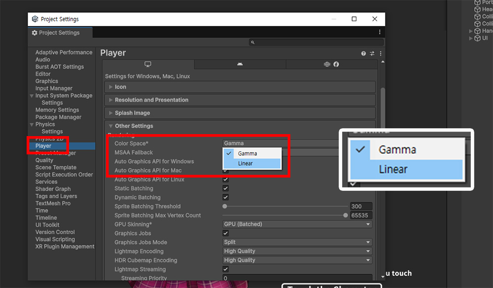
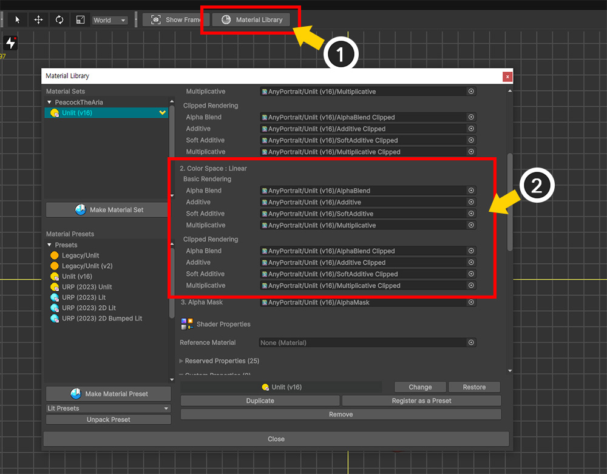

AnyPortrait > Manual > Linear Color Space
Linear Color Space
1.6.0
Change Color Space

You can change the Color Space of your project in Player Settings.
For more information about color spaces, see the related page.
Normally, Gamma color space is used by default, but depending on which template you choose when creating a project, Linear color space may be the default.
Since the default color space in AnyPortrait is Gamma color space, if the project is set to Linear color space, there will be problems with color calculations.
Of course, the opposite can also be true.
The way colors are calculated in rendering is determined by the color space.
If the resource or shader is not suitable for the color space of the project, you may see unintended rendering results like the one above.
Therefore, you need to set the properties of the image resource and the Bake option to match the color space of the project.

(1) Select an image.
(2) Set the value of Color Space of the image to match the current project.

(1) Click the Bake button to open the Bake Dialog.
(2) Select the Setting tab.
(3) Set the value of Color Space to match the current project.

Sometimes, when you press the Bake button, you may see a message like the one above.
The above message appears because the properties of some images do not match the Color Space in Bake Options.
If you press the Okay button here, the color space of all images will be changed to the same as in Bake Options.
If the Color Space is set properly, you will see the character's colors being rendered normally in the Unity scene.
Shader Assets according to Color Space

Since the color calculation formula is different depending on the color space, the appropriate shaders for the color space must be applied to the character.
In the Material Library(Related Page), you can set different shader assets to be applied depending on the color space.
If you check the contents of Material Set or Material Preset, you can see that different shader assets are applied depending on the Color Space (Gamma, Linear).